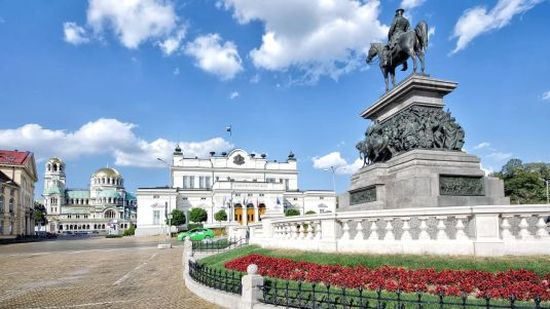

History of Sofia

In recent months, driven by the massive number of low-cost flights to and from the Vrazhdebna airport,
Sofia is experiencing a real tourist boom, mainly fuelled by young people curious to discover new destinations
at low prices. For a long time at the margins of international tourist flows, the Bulgarian capital has gained
popularity since the country's entry into the European Union in early 2007. In the period 2009-2016, according to
data from the Sofia Municipal Tourism Company, the number of tourists in the capital grew on average by about 7% a year.
A turning point came in fall 2016, when low-cost giant Ryanair opened a new base at Vrazhdebna, equipped with three
Boeing 737-800 aircrafts capable of connecting Sofia with 18 European destinations. Ryanair's grand entry triggered
the response of Wizzair, the low-cost Hungarian company that had been dominating the Bulgarian market for years,
which has since launched new routes and revised pricing policy in an effort to remain competitive.
Air traffic, both inbound and outbound, reacted immediately – already in 2016, Sofia's airport registered the
highest growth rate in Europe (+22% compared to the previous year). Figures have risen even faster in 2017:
in the first six months of the year, traffic increased by an impressive 44.6% compared to the same period in 2016,
bringing over three million passengers to Vrazhdebna. In its initial plans, Ryanair had announced that it aimed to
carry a mere 1.7 million passengers to the city.
Tourists flocking to Sofia
The explosion of Sofia airport traffic – which, in prospect, raises some doubts about the organisational and
infrastructural capabilities of the hub – testifies to the strong increase in the number of Bulgarian citizens
using air transport, especially towards other European destinations.
However, the number of foreign visitors who land in the Bulgarian capital has also increased considerably.
In the first half of 2017, the number of tourists registered in Sofia increased by 16.5%, reaching 630,000.
According to the Sofia Tourist Office, the presence of numerous low-cost flights from many European cities –
as low as 20 Euros roundtrip – has profoundly altered the market. Today, the majority of visitors come from Italy,
the United Kingdom, Germany, and Greece, with inflow from Israel, the United States, and Spain also growing.
According to Ivo Marinov, director of the Office, the "low-cost effect" has had a significant impact,
but other factors contribute to the significant increase in stays in Sofia – plus 20,6% compared to the
first semester of 2016. "We are also registering a strong increase in the number of tourists from neighbouring
countries, who prefer to travel by car or by bus", Marinov said. "In the analysed period, visitors from Serbia
grew by 30%, those from Greece by 18%, and those from Romania by 12%".